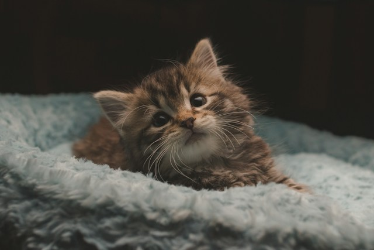

A Walking Ego with Fur
It's true - cats may have an attitude. But they're also fluffy, fun-to-hold and soft. Here are some other fun facts about cats:
- Cats are asleep for 70% of their life
- Cats are better at problem-solving than dogs
- Cats sweat through their paws
- Even Taylor Swift has three cats - called Olivia Benson, Meredith Grey and Benjamin Button!